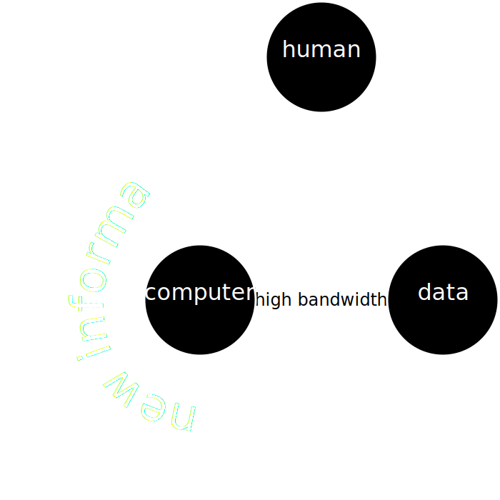

Challenges in Data Science
ENBIS Meeting
University of Sheffield, UK
Neil D. Lawrence
Amazon and University of Sheffield
@lawrennd inverseprobability.com
There are three types of lies: lies, damned lies and statistics
??
There are three types of lies: lies, damned lies and statistics
Benjamin Disraeli
There are three types of lies: lies, damned lies and statistics
Benjamin Disraeli 1804-1881
Mathematical Statistics
- ‘Founded’ by Karl Pearson (1857-1936)

There are three types of lies: lies, damned lies and ‘big data’
Neil Lawrence 1972-?
‘Mathematical Data Science’
- ‘Founded’ by ? (?-?)

Background: Big Data
Data is Pervasive phenomenon that affects all aspects of our activities
Data diffusiveness is both a challenge and an opportunity
Evolved Relationship

“Embodiment Factors”

|

|
|
| compute | ~10 gigaflops | ~ 1000 teraflops? |
| communicate | ~1 gigbit/s | ~ 100 bit/s |
embodiment (compute/communicate) |
10 | ~ 1013 |
Evolved Relationship
Effects
This phenomenon has already revolutionised biology.
Large scale data acquisition and distribution.
Transcriptomics, genomics, epigenomics, ‘rich phenomics’.
Societal Effects
Automated decision making within the computer based only on the data.
A requirement to better understand our own subjective biases to ensure that the human to computer interface formulates the correct conclusions from the data.
Societal Effects
Shift in dynamic from the direct pathway between human and data to indirect pathway between human and data via the computer
This change of dynamics gives us the modern and emerging domain of data science
Challenges
Paradoxes of the Data Society
Quantifying the Value of Data
Privacy, loss of control, marginalization
Breadth vs Depth Paradox
Able to quantify to a greater and greater degree the actions of individuals
But less able to characterize society
As we measure more, we understand less
What?
Perhaps greater preponderance of data is making society itself more complex
Therefore traditional approaches to measurement are failing
Curate’s egg of a society: it is only ‘measured in parts’
Examples
Election polls (UK 2015 elections, EU referendum, US 2016 elections)
Clinical trial and personalized medicine
Social media memes
Filter bubbles and echo chambers
Solutions
More classical statistics!
A better characterization of human needs and flaws
Quantifying the Value of Data
There’s a sea of data, but most of it is undrinkable

We require data-desalination before it can be consumed!
Value
- How do we measure value in the data economy?
- How do we encourage data workers: curation and management
- Incentivization
- Quantifying the value in their contribution
Credit Allocation
Direct work on data generates an enormous amount of ‘value’ in the data economy but this is unaccounted in the economy
Hard because data is difficult to ‘embody’
Value of shared data: Wellcome Trust 2010 Joint Statement (from the “Foggy Bottom” meeting)
Solutions
Encourage greater interaction between application domains and data scientists
Encourage visualization of data
Adoption of ‘data readiness levels’
Implications for incentivization schemes
Privacy, Loss of Control and Marginalization
Society is becoming harder to monitor
Individual is becoming easier to monitor
Hate Speech or Political Dissent?
- social media monitoring for ‘hate speech’ can be easily turned to political dissent monitoring
Marketing
- can become more sinister when the target of the marketing is well understood and the (digital) environment of the target is also so well controlled
Free Will
- What does it mean if a computer can predict our individual behavior better than we ourselves can?
Discrimination
Potential for explicit and implicit discrimination on the basis of race, religion, sexuality, health status
All prohibited under European law, but can pass unawares, or be implicit
Marginalization
- Credit scoring, insurance, medical treatment
- What if certain sectors of society are under-represented in our aanalysis?
- What if Silicon Valley develops everything for us?
Amelioration
- Work to ensure individual retains control of their own data
- We accept privacy in our real lives, need to accept it in our digital
- Control of persona and ability to project
Awareness
- Need to increase awareness of the pitfalls among researchers
- Need to ensure that technological solutions are being delivered not merely for few (#FirstWorldProblems)
- Address a wider set of challenges that the greater part of the world’s population is facing
Conclusion
- Data science offers a great deal of promise
- There are challenges and pitfalls
- It is incumbent on us to avoid them
Many solutions rely on education and awareness
Thanks!
- twitter: @lawrennd
- blog: http://inverseprobability.com